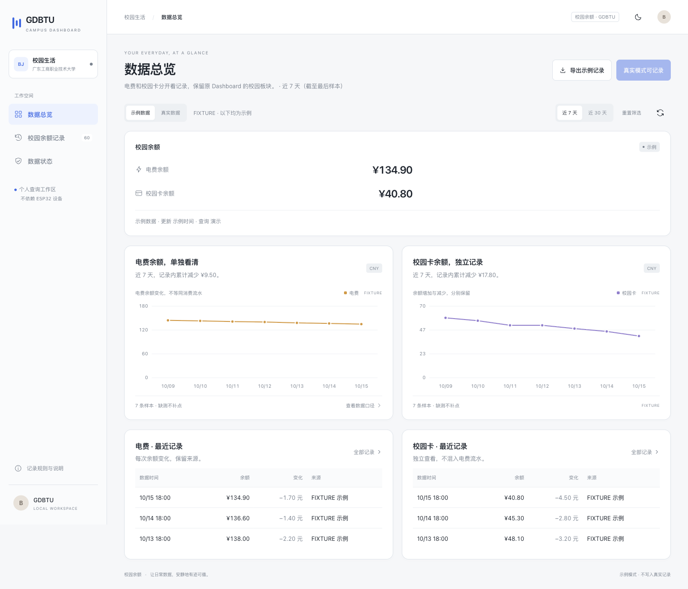

GDBTU / CAMPUS BALANCE开源项目
校园余额，
抬眼就看见。
Scriptable 小组件 × 原 Dashboard 校园板块

广东工商职业技术大学 · 非官方个人项目
手机实机截图 / 真实数值 Web 截图 / 演示数据
GitHub：JasonBeam / gdbtu-campus-balance
03 / WEB DASHBOARD实际页面截图 · 演示数据
从原 Dashboard，
提取校园板块。
保留原卡片、走势图与记录表，分别查看两种余额。
沿用现有面板
浅色 / 深色主题 · 手机宽度布局
只保留校园数据，不依赖 ESP32
Python 标准库即可启动
Web 实际截图 · 全部金额与走势为演示数据 · 不代表个人账单
04 / GET STARTED先看教程，再配置
楼栋、楼层、房号，
尽量少手填。
01先在官方网页选好宿舍
使用自己的有效登录会话，确认官方页面
已经显示正确余额。
02在本机导出查询配置
工具读取已选宿舍的最终 ID。
不发送网络请求，点击后才保存或复制。
03导入 Scriptable 或 Web
小组件存 Keychain，面板使用本机配置。
个人配置不要上传，也不要截图分享。
此方式已核对官方网页代码、通过模拟测试，
真实登录仍待验证；微信与浏览器不一定共享会话。
不承诺人人免抓包，教程保留备用方案。
GitHub · JasonBeam
gdbtu-campus-balance
广东工商职业技术大学 · 非官方个人工具 · 教程与源码见 README